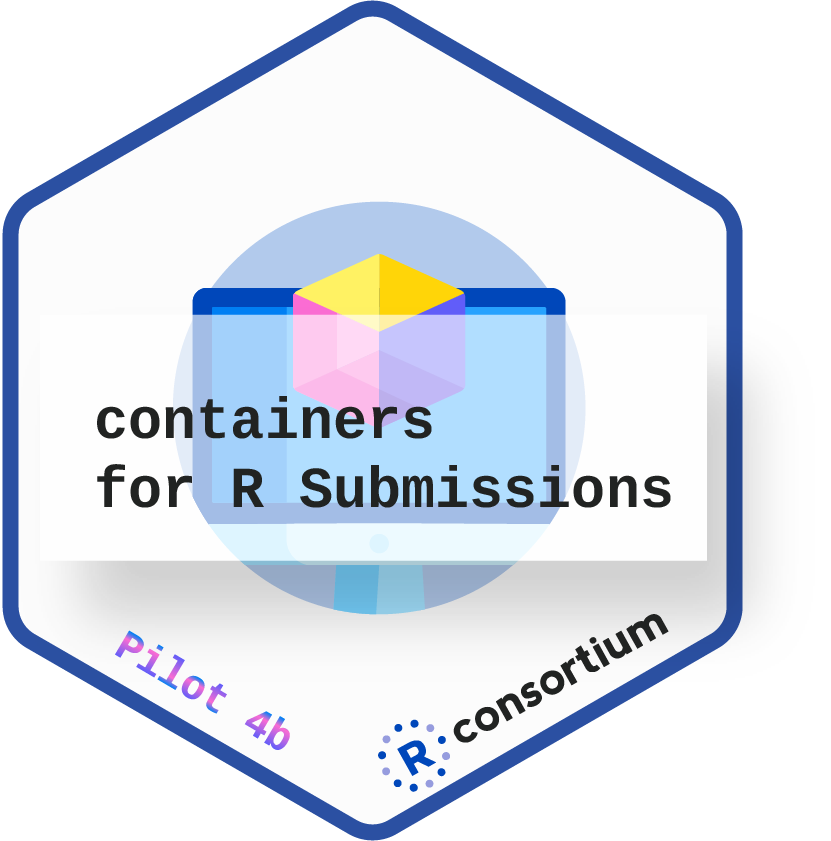
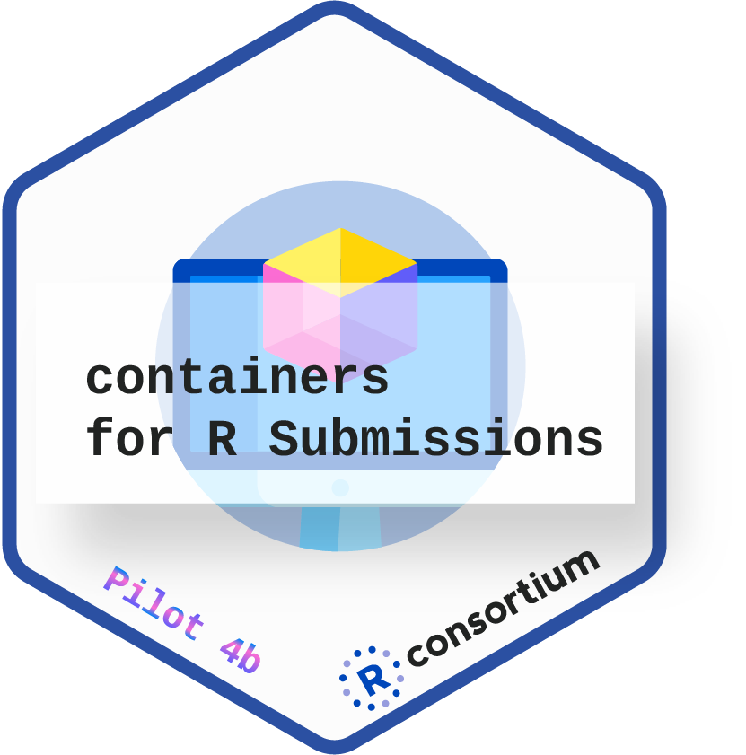

library(cards)
library(gtsummary)
dplyr::filter(pharmaverseadam::adsl, SAFFL == "Y") |>
tbl_summary(
include = c(AGE, AGEGR1),
type = AGE ~ "continuous2",
statistic = AGE ~ c("{mean} ({sd})", "{median} ({p25}, {p75})")
) |>
gather_ard() |>
purrr::pluck("tbl_summary") |>
apply_fmt_fun() |>
as_nested_list() |>
jsonlite::toJSON(pretty = TRUE)Submissions in R and Wrap-Up
E2E Overview
Submissions Working Group
Mission
- Easier R-based clinical trial regulatory submissions today
- by showing open examples of using current submission portals
- Easier R-based clinical trial regulatory submissions tomorrow
- by collecting feedback and influencing future industry and agency decisions on system/process setup
- Website: https://rconsortium.github.io/submissions-wg/
- Slack: Invite to Slack
Pilots
 

Additional Tooling
ARDs + LLMs
How can LLMs help us within the {cards}+{gtsummary} framework?
- {gtsummary} is a widely used package, the publicly available LLMs write code out of the box: no additional training needed.
Act as a statistical programmer within the pharmaceutical industry, and provide me code to create tables in the R language using the gtsummary package.
Using the ADSL data set as an input, please provide the code for creating a demographics table that is split by treatment arm. Include the variables AGE and AGEGR1. AGE is a continuous summary, and include the mean, standard deviation, median and IQR. AGEGR1 is a categorical variable and include the count and percent in the summary.
How can LLMs help us within the ARD framework?
The result! (using Gemini)
# Load necessary packages
# If you don't have gtsummary installed, uncomment and run:
# install.packages("gtsummary")
# install.packages("dplyr") # Often useful with gtsummary for data manipulation
library(gtsummary)
library(dplyr)
# --- Simulate ADSL Data ---
# In a real-world scenario, you would load your actual ADSL data.
# For demonstration purposes, we'll create a dummy ADSL dataset.
set.seed(123) # for reproducibility
adsl_data <- tibble(
USUBJID = paste0("SUBJ", 1:100),
TRT01A = sample(c("Placebo", "Treatment A", "Treatment B"), 100, replace = TRUE, prob = c(0.3, 0.4, 0.3)),
AGE = round(rnorm(100, mean = 55, sd = 10), 0),
AGEGR1 = cut(AGE,
breaks = c(0, 18, 65, Inf),
labels = c("<18", "18-65", ">65"),
right = FALSE)
) %>%
# Ensure factors for proper ordering and handling by gtsummary
mutate(
TRT01A = factor(TRT01A, levels = c("Placebo", "Treatment A", "Treatment B")),
AGEGR1 = factor(AGEGR1, levels = c("<18", "18-65", ">65"))
)
# --- Create the Demographics Table ---
# Use tbl_summary to create the table, specifying:
# - data: The ADSL dataset
# - by: The variable to split the table by (treatment arm)
# - include: The variables to include in the table
# - type: How to summarize each variable (continuous vs. categorical)
# - statistic: The specific statistics to display for each variable type
demographics_table <-
adsl_data %>%
tbl_summary(
by = TRT01A, # Split the table by treatment arm
include = c(AGE, AGEGR1), # Include Age and Age Group variables
type = list(
AGE ~ "continuous", # Specify AGE as continuous
AGEGR1 ~ "categorical" # Specify AGEGR1 as categorical
),
statistic = list(
# For continuous AGE, include mean (SD) and median (IQR)
AGE ~ "{mean} ({sd})", # Mean (Standard Deviation)
AGE ~ "{median} ({p25}, {p75})", # Median (25th percentile, 75th percentile) - IQR
# For categorical AGEGR1, include count (percent)
AGEGR1 ~ "{n} ({p}%)"
),
# Add labels for better readability
label = list(
AGE ~ "Age, years",
AGEGR1 ~ "Age Group, years"
),
# Add a note explaining the statistics
missing = "no", # Do not show missing values row for this table
# Specify options for displaying missing data, formatting, etc.
# We are explicitly specifying all statistics for AGE, so we might not need "all_continuous()" or "all_categorical()",
# but they are good for default behavior if not all statistics are overridden.
# To combine mean (SD) and median (IQR) into a single row, you would list them separated by a comma
# in the statistic argument.
digits = all_continuous() ~ 1, # One decimal place for continuous variables
) %>%
add_n() %>% # Add column for total N
add_p() %>% # Add p-value for group comparison (optional, but good for demographics)
modify_header(
list(
label ~ "**Characteristic**",
stat_by ~ "**{level}**\nN = {n}" # Customize column headers to show N
)
) %>%
modify_footnote(
update = AGE ~ "Mean (SD); Median (IQR)"
) %>%
# Add table title
modify_caption("**Table 1. Demographics by Treatment Arm**")
# Print the table to see the output
demographics_table
# To export the table (e.g., to Word, PDF, HTML):
# library(flextable) # for Word/PDF output
# library(gt) # for HTML output (often used with gtsummary)
# Example for Word:
# demographics_table %>%
# as_flex_table() %>%
# flextable::save_as_docx(path = "demographics_table.docx")
# Example for HTML:
# demographics_table %>%
# as_gt() %>%
# gt::gtsave(filename = "demographics_table.html")
# Example for RMarkdown/Quarto knitting (table will render directly):
# You would simply include the 'demographics_table' object in your RMarkdown/Quarto chunk.How can LLMs help us within the ARD framework?
ARDs can be represented in language-agnostic formats like JSON and YAML.
A summary table has a representation that is readily digestible by your favorite LLM.
How can LLMs help us within the ARD framework?
{
"variable": {
"AGEGR1": {
"variable_level": {
">64": {
"stat_name": {
"n": {
"stat": [221],
"stat_fmt": ["221"],
"warning": {},
"error": {},
"context": ["tabulate"]
},
"N": {
"stat": [254],
"stat_fmt": ["254"],
"warning": {},
"error": {},
"context": ["tabulate"]
},
"p": {
"stat": [0.8701],
"stat_fmt": ["87"],
"warning": {},
"error": {},
"context": ["tabulate"]
}
}
},
"18-64": {
"stat_name": {
"n": {
"stat": [33],
"stat_fmt": ["33"],
"warning": {},
"error": {},
"context": ["tabulate"]
},
"N": {
"stat": [254],
"stat_fmt": ["254"],
"warning": {},
"error": {},
"context": ["tabulate"]
},
"p": {
"stat": [0.1299],
"stat_fmt": ["13"],
"warning": {},
"error": {},
"context": ["tabulate"]
}
}
}
},
"stat_name": {
"label": {
"stat": ["Pooled Age Group 1"],
"stat_fmt": ["Pooled Age Group 1"],
"warning": {},
"error": {},
"context": ["attributes"]
},
"class": {
"stat": ["character"],
"stat_fmt": {},
"warning": {},
"error": {},
"context": ["attributes"]
},
"N_obs": {
"stat": [254],
"stat_fmt": ["254"],
"warning": {},
"error": {},
"context": ["missing"]
},
"N_miss": {
"stat": [0],
"stat_fmt": ["0"],
"warning": {},
"error": {},
"context": ["missing"]
},
"N_nonmiss": {
"stat": [254],
"stat_fmt": ["254"],
"warning": {},
"error": {},
"context": ["missing"]
},
"p_miss": {
"stat": [0],
"stat_fmt": ["0"],
"warning": {},
"error": {},
"context": ["missing"]
},
"p_nonmiss": {
"stat": [1],
"stat_fmt": ["100"],
"warning": {},
"error": {},
"context": ["missing"]
}
}
},
"AGE": {
"stat_name": {
"mean": {
"stat": [75.0866],
"stat_fmt": ["75"],
"warning": {},
"error": {},
"context": ["summary"]
},
"sd": {
"stat": [8.2462],
"stat_fmt": ["8"],
"warning": {},
"error": {},
"context": ["summary"]
},
"median": {
"stat": [77],
"stat_fmt": ["77"],
"warning": {},
"error": {},
"context": ["summary"]
},
"p25": {
"stat": [70],
"stat_fmt": ["70"],
"warning": {},
"error": {},
"context": ["summary"]
},
"p75": {
"stat": [81],
"stat_fmt": ["81"],
"warning": {},
"error": {},
"context": ["summary"]
},
"label": {
"stat": ["Age"],
"stat_fmt": ["Age"],
"warning": {},
"error": {},
"context": ["attributes"]
},
"class": {
"stat": ["numeric"],
"stat_fmt": {},
"warning": {},
"error": {},
"context": ["attributes"]
},
"N_obs": {
"stat": [254],
"stat_fmt": ["254"],
"warning": {},
"error": {},
"context": ["missing"]
},
"N_miss": {
"stat": [0],
"stat_fmt": ["0"],
"warning": {},
"error": {},
"context": ["missing"]
},
"N_nonmiss": {
"stat": [254],
"stat_fmt": ["254"],
"warning": {},
"error": {},
"context": ["missing"]
},
"p_miss": {
"stat": [0],
"stat_fmt": ["0"],
"warning": {},
"error": {},
"context": ["missing"]
},
"p_nonmiss": {
"stat": [1],
"stat_fmt": ["100"],
"warning": {},
"error": {},
"context": ["missing"]
}
}
},
"..ard_total_n..": {
"stat_name": {
"N": {
"stat": [254],
"stat_fmt": ["254"],
"warning": {},
"error": {},
"context": ["total_n"]
}
}
}
}
} How can LLMs help us within the ARD framework?
Ask the LLM to write draft summary for you.
Below you will find a JSON representation of the results in the table. Act as a medical writer working at a pharmaceutical company and write a brief summary of the results.
A total of 254 participants were enrolled in the study, distributed across three treatment arms: Placebo (N=86), Xanomeline High Dose (N=84), and Xanomeline Low Dose (N=84).
Baseline demographics indicate that participants were generally similar across all treatment groups with respect to age. The mean age was approximately 75 years across the groups, with standard deviations ranging from 7.9 to 8.6 years. Specifically, the mean age (standard deviation) was 75.2 (8.6) years in the Placebo group, 74.4 (7.9) years in the Xanomeline High Dose group, and 75.7 (8.3) years in the Xanomeline Low Dose group. The median ages were also comparable: 76 years (IQR: 69, 82) for Placebo, 76 years (IQR: 70.5, 80) for Xanomeline High Dose, and 77.5 years (IQR: 71, 82) for Xanomeline Low Dose.
Regarding age groups, the majority of participants in all treatment arms were over 64 years of age. Specifically, the proportion of participants aged >64 years was 83.7% (n=72) in the Placebo group, 86.9% (n=73) in the Xanomeline High Dose group, and 90.5% (n=76) in the Xanomeline Low Dose group. The proportion of participants aged 18-64 years was 16.3% (n=14) in the Placebo group, 13.1% (n=11) in the Xanomeline High Dose group, and 9.5% (n=8) in the Xanomeline Low Dose group. There were no participants under 18 years of age.
Overall, the demographic characteristics at baseline appear well-balanced across the treatment groups, suggesting that any observed differences in outcomes are less likely to be attributable to baseline age disparities.
Teal
What is {teal}?
- Open-source R Shiny-based interactive data exploration framework
- Modularized and standardized building blocks
- Collection of specialized R packages
- Streamlines creation of web-apps that offers:
- Dynamic filtering facility
- Code reproducibility
- Reporting engine
- Many data summarization and visualizations
Teal Modules
Teal modules are shiny modules built within the teal framework that specify analysis to be performed. For example, it can be a module for exploring outliers in the data, or a module for visualizing the data in line plots.
- teal.modules.general: General modules for exploring relational/independent/CDISC data
- teal.modules.clinical: Modules specific to CDISC data and clinical trial reporting
- teal.modules.hermes: Modules for analyzing MultiAssayExperiment objects
Your first Teal app
Teal Gallery
A gallery of sample apps based on the teal framework. The gallery showcases a variety of applications, including safety, efficacy and exploratory examples.
Teal as a shiny module
- A shiny developer can embed a teal application into their own shiny app by using shiny module components of teal
- Using teal as a shiny module offers several advantages:
- Embedding one or more teal applications within a larger shiny app
- Creating teal applications with dynamically generated components (initial data, modules, filters)
- Teal as a shiny module
Thank you for being here!
Remember…
The success of Pharmaverse and Open Source relies on the community!
How to contribute
Use the packages
Write blogs, create templates
Submit Issues and/or Code
documentation
feature requests
Bug
Join as a contributor – get in touch with the maintainer
Diversity Alliance Hackathon is coming up!
All types of contributions are welcome!
Discussion time
[If time allows!]
Form a small group of 4-5 with your neighbors
Discuss the following questions
What had you expected to learn today
What was learned at today
What will you be bringing back to your teams
What do we think is the skillset that will be required in the future
What do we see as benefits of ARDs
If you could tell yourself something 5 years ago, what would it be?
Post-workshop Survey
Your feedback is crucial!
Data from the survey informs curriculum and format decisions for future conf workshops, and we really appreciate you taking the time to provide it
< add link >